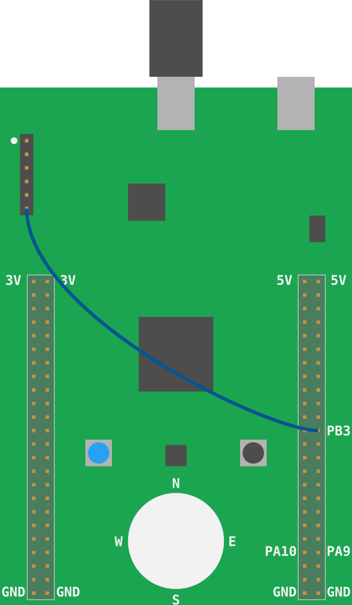

Hello, world!
注意：STM32F3DISCOVERY上的"桥接"SB10 (见电路板背面)需要使用ITM和
iprint!下面显示的宏 在默认情况下不会焊接((参见用户手册第21页)。(更准确地说：这实际上取决于电路板的版本。 如果您有旧版的电路板，如旧用户手册所述，SB10是焊接的。请检查您的电路板以决定是否需要修复它。)
TL;DR 您有两个选项可以解决此问题：焊接焊料桥SB10或在SWO和PB3之间连接一条母对母跳线，如下图所示。

在我们开始做低水平的事情之前，再多一些有用的魔法。
LED闪烁就像嵌入式世界的"Hello, world"。
但在本节中，我们将运行一个适当的"Hello, world"程序，将内容打印到计算机控制台。
转到06-hello-world目录。里面有一些启动代码：
#![deny(unsafe_code)] #![no_main] #![no_std] #[allow(unused_imports)] use aux6::{entry, iprint, iprintln}; #[entry] fn main() -> ! { let mut itm = aux6::init(); iprintln!(&mut itm.stim[0], "Hello, world!"); loop {} }
iprintln宏将格式化消息并将其输出到微控制器的ITM。ITM代表Instrumentation Trace Macrocell
它是SWD（串行线调试）之上的一种通信协议，可用于从微控制器向调试主机发送消息。
这种通信只有一种方式：调试主机无法向微控制器发送数据。
管理调试会话的OpenOCD可以接收通过ITM通道发送的数据并将其重定向到文件。
ITM协议与帧一起工作 (您可以将它们视为以太网帧)。每个帧都有一个报头和一个可变长度的有效载荷。
OpenOCD将接收这些帧，并将它们直接写入文件，而无需解析它们。
所以，如果微控制器发送字符串"Hello, world!" 使用iprintln宏，OpenOCD的输出文件不会完全包含该字符串。
要检索原始字符串，必须解析OpenOCD的输出文件。我们将使用itmdump程序在新数据到达时执行解析。
在安装章节中，您应该已经安装了itmdump程序。
在新终端中，如果您使用的是*nix OS，请在/tmp目录中运行此命令；如果您运行的是Windows，请在%TEMP%目录中运行该命令。
这应该是运行OpenOCD的同一目录。
注意：
itmdump和openocd都在同一目录下运行，这一点非常重要！
$ # itmdump terminal
$ # *nix
$ cd /tmp && touch itm.txt
$ # Windows
$ cd %TEMP% && type nul >> itm.txt
$ # both
$ itmdump -F -f itm.txt
当itmdump正在监视itm时，该命令将被阻止。itm.txt文件保持此终端打开。
确保STM32F3DISCOVER板已连接到计算机。从/tmp目录 (在Windows%TEMP%) 打开另一个终端，启动OpenOCD，如第3章所述。
好吧现在，让我们构建启动代码并将其闪存到微控制器中。
我们现在将构建并运行应用程序，cargo run。然后使用next逐步完成。自openocd.gdb以来。
openocd.gdb包含monitor命令，OpenOCD将ITM输出重定向到itm.txt和itmdump将其写入其终端窗口。
此外，它还设置了断点并逐步通过trampoline，我们看到fn main()中的第一个可执行语句：
~/embedded-discovery/src/06-hello-world
$ cargo run
Finished dev [unoptimized + debuginfo] target(s) in 0.01s
Running `arm-none-eabi-gdb -q -x ../openocd.gdb ~/embedded-discovery/target/thumbv7em-none-eabihf/debug/hello-world`
Reading symbols from ~/embedded-discovery/target/thumbv7em-none-eabihf/debug/hello-world...
hello_world::__cortex_m_rt_main () at ~/embedded-discovery/src/06-hello-world/src/main.rs:14
14 loop {}
Loading section .vector_table, size 0x194 lma 0x8000000
Loading section .text, size 0x2828 lma 0x8000194
Loading section .rodata, size 0x638 lma 0x80029bc
Start address 0x08000194, load size 12276
Transfer rate: 18 KB/sec, 4092 bytes/write.
Breakpoint 1 at 0x80001f0: file ~/embedded-discovery/src/06-hello-world/src/main.rs, line 8.
Note: automatically using hardware breakpoints for read-only addresses.
Breakpoint 2 at 0x800092a: file /home/wink/.cargo/registry/src/github.com-1ecc6299db9ec823/cortex-m-rt-0.6.13/src/lib.rs, line 570.
Breakpoint 3 at 0x80029a8: file /home/wink/.cargo/registry/src/github.com-1ecc6299db9ec823/cortex-m-rt-0.6.13/src/lib.rs, line 560.
Breakpoint 1, hello_world::__cortex_m_rt_main_trampoline () at ~/embedded-discovery/src/06-hello-world/src/main.rs:8
8 #[entry]
hello_world::__cortex_m_rt_main () at ~/embedded-discovery/src/06-hello-world/src/main.rs:10
10 let mut itm = aux6::init();
(gdb)
现在发出next命令，该命令将执行aux6::init()，并在main.rs的下一个可执行语句处停止，将我们定位在第12行：
(gdb) next
12 iprintln!(&mut itm.stim[0], "Hello, world!");
然后发出另一个next命令执行第12行，执行iprintln在第14行停止：
(gdb) next
14 loop {}
现在，由于iprintln已经执行，itmdump终端窗口上的输出应该是Hello, world!字符串：
$ itmdump -F -f itm.txt
(...)
Hello, world!
太棒了，对吧？在接下来的章节中，可以使用iprintln作为测试工具。
下一篇：这还不是全部！iprint!宏不是唯一使用ITM的东西。:-)